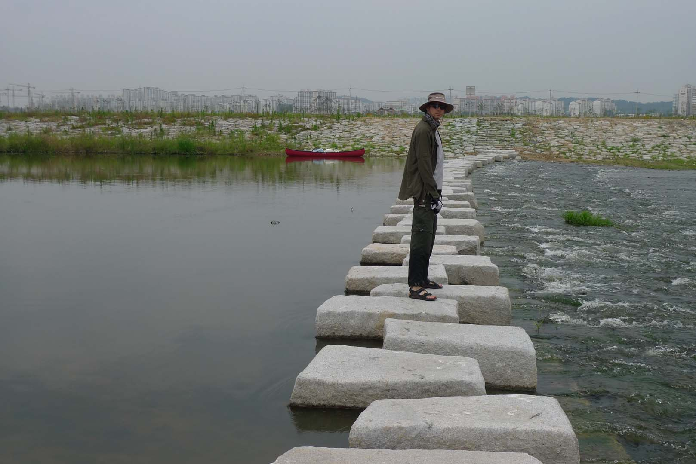
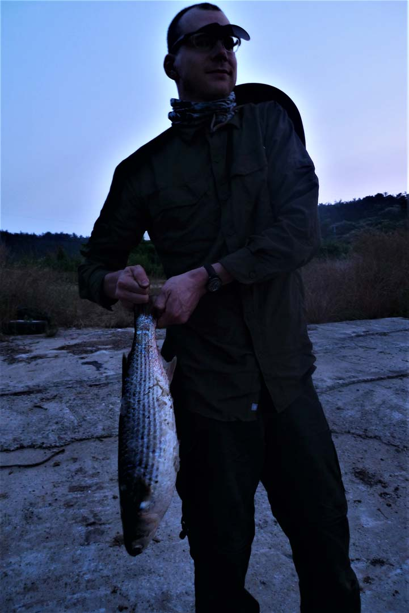

Canoe Trip on the Yeoungsan (영산강) River

This was my first trip with Hobbs, a fellow professor at KAIST. He was very experienced from his youth
with camping and canoeing as his family had done this every summer when he was growing up. We met at
KAIST on Thursday, June 14th 2012, around 2 p.m., loaded the canoe on the car roof, organized all the
food and camping gear into their respective bags and put everything into the car. We had a hard time
finding a place to park the car as the roads were really confusing, but finally found one location a
little distance above GwangJu City (광주시). The negative aspects of this location were the shallow nature
of the river here at this time of year and the added distance we would have to paddle to reach our goal.
We had to walk the loaded canoe for most of the rest of the day. This was really slow going and it meant
that we were still trying to reach our first day’s goal at 7: 30 p.m. and did not find a suitable
campsite until after 8 p.m. It also meant that we had to forgo a cooked meal and eat peanut butter and
jelly sandwiches. Unfortunately, it was too late to take a swim as we had to get up early the next
morning. We camped on this small island with our North Face VE24 Tent.
Challenges on the river

We were up early the next day, Friday, June 15, th 2012 and on the river by eight thirty. The river was
still too shallow so we walked the canoe along and finally it became deep enough so we could finally
make time paddling the canoe on the river. We immediately encountered a number of stone walkways and
small dams that were easy to get over. All of the recently built dams had fish ladders that greatly
facilitated the trip downstream. These can be seen in the pictures. One can see the improvements in dam
construction by comparing the dams on the Geum (금강) River that were constructed during the Park Chun Hee
(박정희) period in the 1970s and those on this river. I do not remember any fish ladders on the Geum (금강)
River. The greatest challenge on the trip was the dam encountered in the afternoon. This was constructed
a year before as a part of the Four Rivers Project. It was a huge dam and actually had a lock for boats
to pass through but for some reason it was not operating when we arrived. We were lucky as there were a
number of people visiting the dam site and they assisted our moving the canoe and all our gear around
the structure. Still it took over an hour to complete this process. A few kilometers downstream we set
up the tent around seven thirty on an island a little distance above another dam. This island was made
up of the material that had been dredged from the bottom of the river the prior year. It was a beautiful
location with abundant wild flowers that appeared to be part of the reclamation process. Now this time
we had an opportunity to go swimming and the water felt really great after a rather difficult day. We
greatly enjoyed the swim and admired the sunset in the distance as it became dark.
Flying Fish

The next morning, Saturday June 16th, 2012, we were again up early and after breakfast were back on the
river by 8 a.m. By 9:30 a.m. we encountered another dam in the process of construction. We were able to
carry the canoe around this one as it had not been completed. But a little before 1 p.m. we encountered
the largest dam I have seen on any of the river trips. It was huge and again there was a boat lock but
it was not operating and we had to unload the canoe and carry all the gear around this obstacle. Because
of the distance of the carry this bypass took us over 1.5 hours. Luckily, we were able to receive help
without which it would have taken many more trips to bring the gear to the new location for the boat.
Again the people found it difficult to understand why one would travel so far on the river and they
feared we would drown on the way. Later in the day we were lucky as the wind was from behind us, a rare
event. Usually in the evening when near the coast the wind was in our face. We did take one of the mats
that we had brought and Hobbs held it up like a sail. This section of the river had a river bank that
was covered with reeds making it difficult to find a camping site for the night. Around us there were a
large number of striped bass jumping high into the air and one large one jumped into the canoe. I asked
Hobbs to put his foot on it, he did and I looked forward to cooking fresh fish for dinner. Finally
around 8:30 p.m. we found a cement landing where a boat was docked and we decided to make this our camp
site for the night. We were getting desperate at the time because it was fast becoming dark, so this
location was a godsend. We cooked the fish up for our diner and it made the best meal of any of the
canoe trips.

The next day was Sunday, June 17th, 2012 and we were up early and I was cooking breakfast by 6:30 a.m.
It was a beautiful day and we were looking forward to arriving at our destination of MokPo (목포) by noon.
We weren’t sure of our location but thought that we were within five hours of our destination. Our canoe
immediately passed by a dredge that was busy digging out sediment on the bottom of the river. Each
dredge either had a barge next to it to collect the river bottom dirt or had a long hose supported by
flotation devices that lead to the shore and up the slope far enough so that the sediment that was
dumped did not flow back into the river. We passed by the beautiful area of NaJu (나주). There was an
island there that looked like something out of a picture book. I put away in my head that someday we
should return to this location when the bass were running and fish for a year’s supply of this tasty
food. Related to this you do not need a fishing license to fish in South Korea. Lucky for us the wind
did not pick up and pushing hard we arrived at a good docking location by 1 p.m. I left Hobbs at the
boat ramp where a car picked me up and dropped me at the bus terminal. From there I took a bus to
GwangJu (광주) where I took a taxi to the location we had spotted the car. I then drove from Gwangju (광주)
to MokPo (목포) and we were ready to leave by 6 p.m. We arrived back at KAIST around 9:45 p.m. We then off
loaded the canoe and gear and I arrived home around 11 p.m. It had been a long day but we were satisfied
that we had completed canoeing the full distance of the YeongSan (영산강) River from GwangJu (광주) to
MokPo(목포).